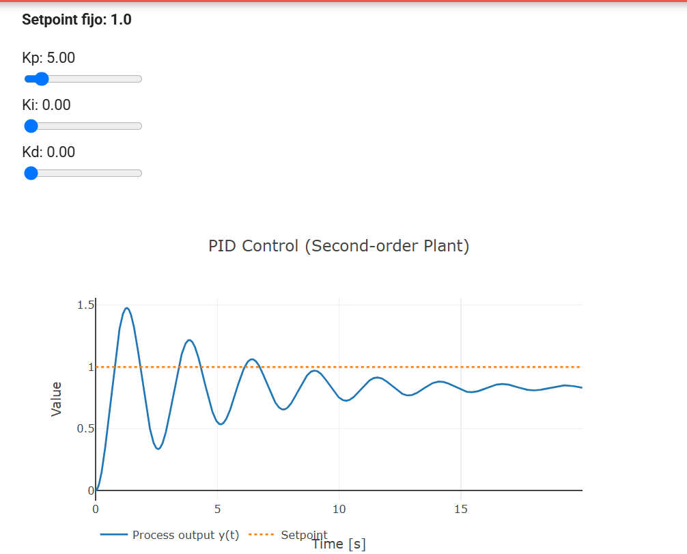
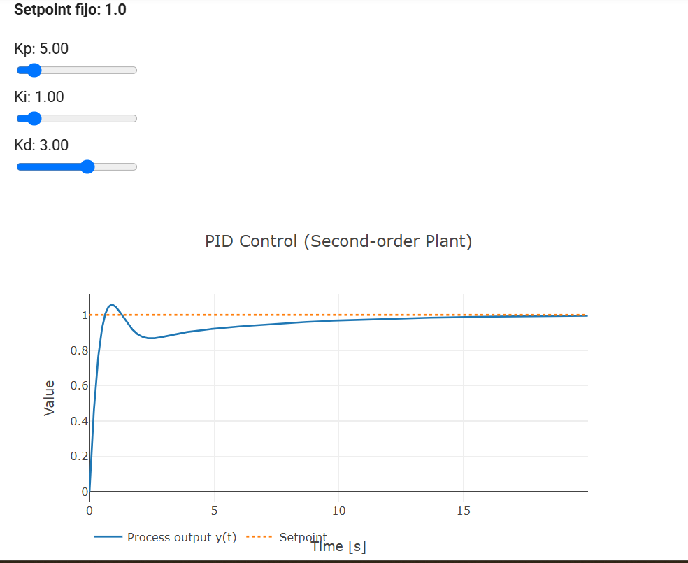
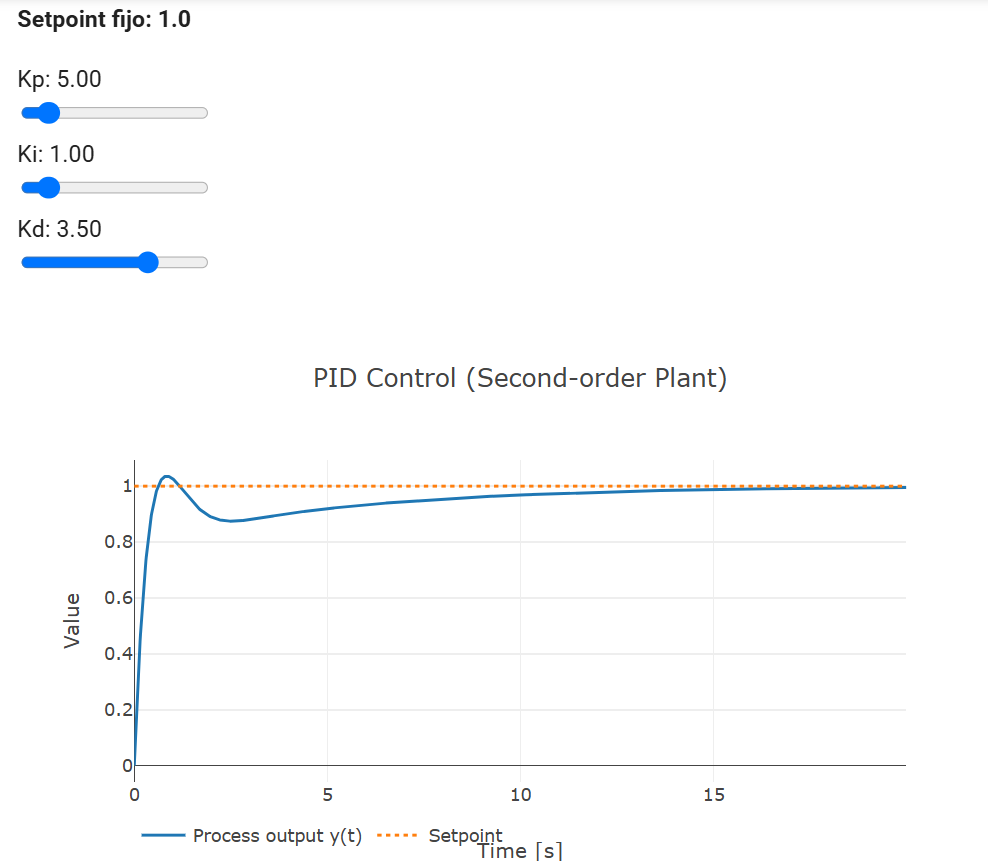
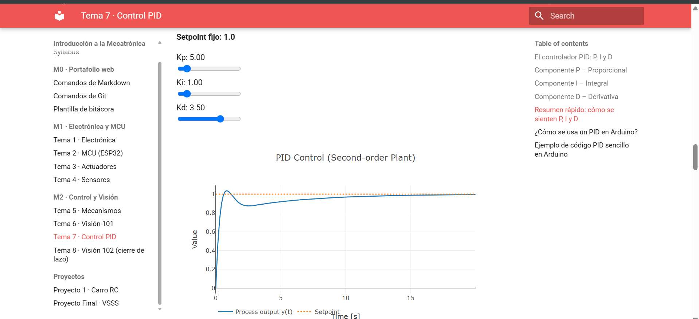
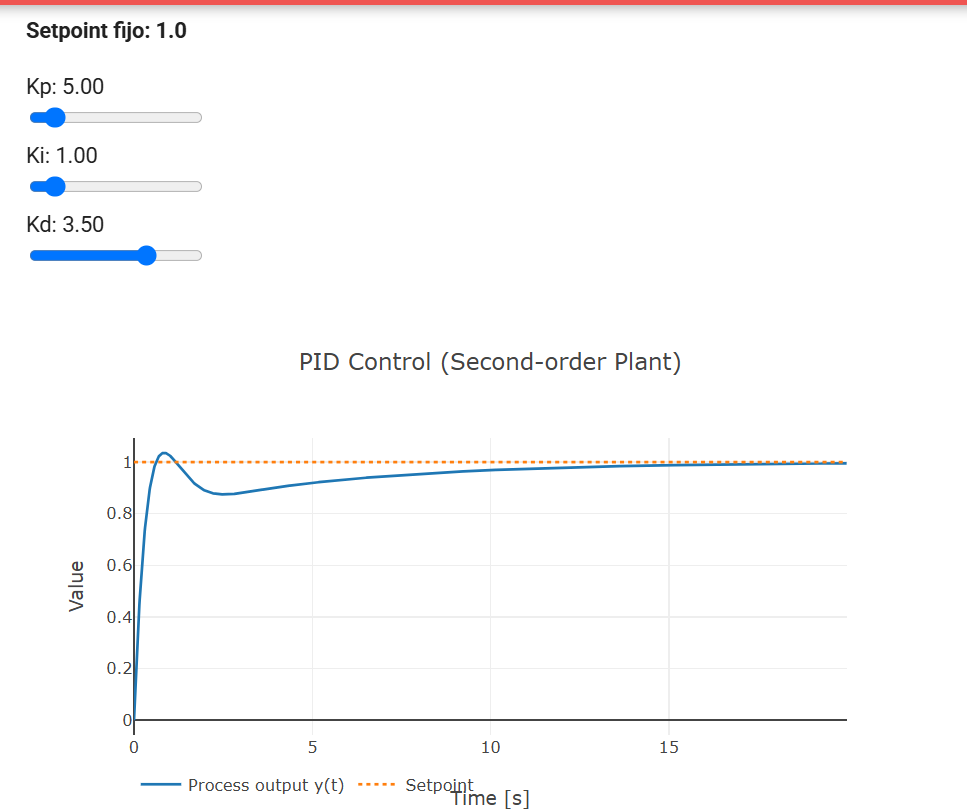
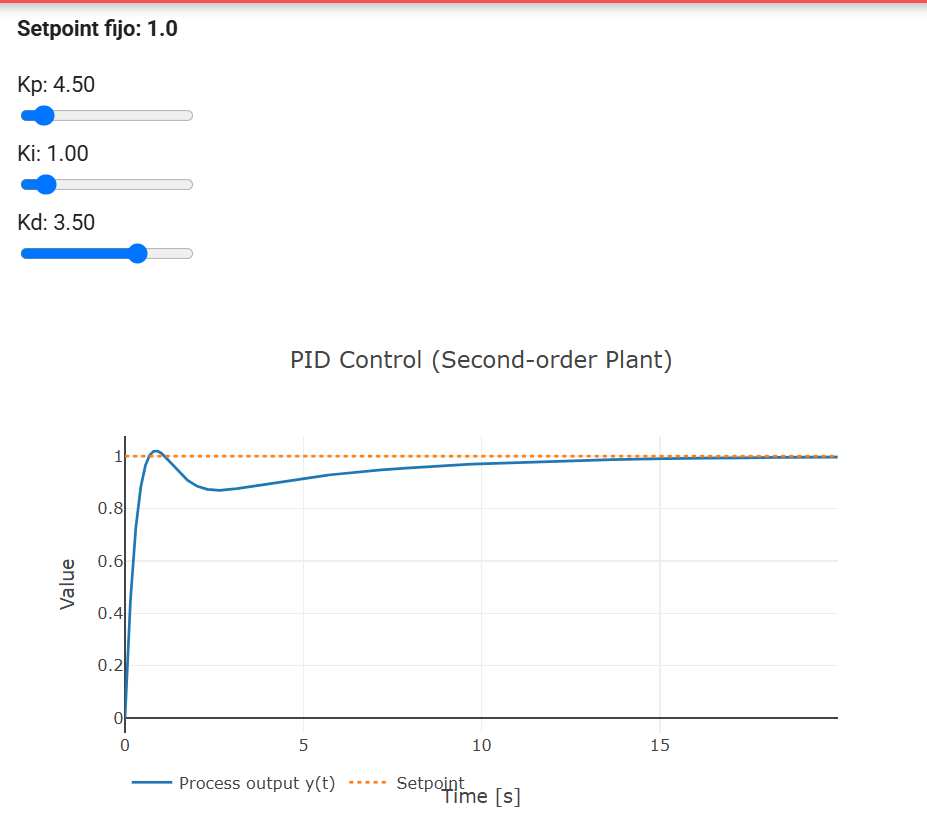

Práctica de Control: Lazo Abierto y Lazo Cerrado (PID)
Institución: Universidad Iberoamericana Puebla (Ibero Puebla)
Materia: Introducción a la Mecatrónica
Docente: Maestra Miranda
Fecha de realización: Viernes 30 de octubre de 2026
Plataforma: ESP32 DevKit V1 | Driver TB6612FNG | Alimentación: 2x3.7V LiPo (7.4V)
Introducción
En esta práctica se evaluó el comportamiento de un sistema mecatrónico móvil tanto en Lazo Abierto (ejecución de comandos preprogramados por tiempo y PWM fijo) como en Lazo Cerrado (mediante simulación e implementación de un controlador PID). El objetivo principal es identificar el impacto de las perturbaciones externas (fricción, masa, desbalance de motores) y comprender cómo la retroalimentación permite corregir el error en estado estacionario y mejorar la respuesta dinámica del sistema.
Parte A: Lazo Abierto con el Carrito ESP32
Se programó una secuencia temporal fija con un valor constante de PWM (\(PWM = 180\)) en el ESP32 para ejecutar la siguiente trayectoria: 1. Avanzar por 2 segundos. 2. Girar sobre su propio eje por 1 segundo. 3. Avanzar por 2 segundos.
Se realizaron pruebas bajo dos condiciones distintas: piso liso de azulejo sin carga y piso liso de azulejo con carga (500 g). En cada caso se midió la desviación en centímetros con respecto al punto final meta esperado.
Tabla de Registro de Desviaciones (Parte A)
| Condición | Intento | Desviación del punto final (cm) | Observaciones |
|---|---|---|---|
| Piso liso de azulejo (sin carga) | 1 | 18 cm | Con voltaje nominal (7.4 V), la falta de tracción inicial provocó un leve derrape en las ruedas. |
| Piso liso de azulejo (sin carga) | 2 | 38 cm | El giro duró sensiblemente más tiempo de lo esperado, desviando por completo la trayectoria final. |
| Piso liso de azulejo con carga (500 g) | 1 | 36 cm | La inercia del peso adicional aumentó la desviación lineal respecto al punto meta. |
| Piso liso de azulejo con carga (500 g) | 2 | 21 cm | El giro duró menos tiempo debido al peso extra sobre los motores, quedando más cerca de la orientación meta. |
Conclusión sobre Lazo Abierto
Existe una alta variabilidad en los resultados debido a la falta de retroalimentación (sensores). El comportamiento de giro varía drásticamente: en ocasiones el giro es más pronunciado y en otras es más cerrado. Esta inconsistencia en el ángulo de rotación es la principal causa del cambio en la posición final esperada.
Parte B: Lazo Cerrado con Demo PID
Se utilizó una demo interactiva de una planta de segundo orden para sintonizar un controlador PID aplicando la receta empírica: primero \(P\), luego \(D\) y finalmente \(I\).
Fórmula del Controlador PID
Tabla de Registro de Sintonía (Parte B)
| Intento | Kp | Ki | Kd | Sobreimpulso (%) | Tiempo de establecimiento (s) | Error permanente | Observación |
|---|---|---|---|---|---|---|---|
| 1 | 5.0 | 0.0 | 0.0 | \(\approx 48\%\) | \(> 15\) s (No estabiliza) | Presente (\(\approx 18\%\)) | Control puramente proporcional. Muestra oscilaciones continuas y deja error en estado estacionario. |
| 2 | 5.0 | 1.0 | 3.0 | \(\approx 6\%\) | \(\approx 4.0\) s | Cero | Respuesta balanceada: la parte \(D\) frena el sobreimpulso y la parte \(I\) elimina el error permanente. |
Elección de Parámetros Finales y Justificación
- Parámetros elegidos: \(K_p = 5.0\), \(K_i = 1.0\), \(K_d = 3.0\)
- Justificación: La ganancia \(K_p = 5.0\) brinda una velocidad de reacción adecuada. Al incorporar \(K_d = 3.0\), se amortiguan las oscilaciones iniciales, mientras que \(K_i = 1.0\) acumula el error pasativo hasta erradicarlo por completo, estabilizando el sistema en un tiempo de \(\approx 4.0\text{ s}\).
Apartado EXTRA: Optimización de Parámetros
Objetivo: Lograr un sobreimpulso menor al \(5\%\) y un tiempo de establecimiento menor a \(5\text{ s}\).
Proceso de Sintonía Fina
Tomando en cuenta la restricción de los sliders en la interfaz de usuario (incrementos de \(0.5\) en \(0.5\) para \(K_p\)), se incrementó la componente derivativa a \(K_d = 3.50\) manteniendo \(K_p = 5.00\) e \(K_i = 1.00\).
Tabla de Registro (EXTRA)
| Intento | Kp | Ki | Kd | Sobreimpulso (%) | Tiempo de establecimiento (s) | Error permanente | Observación |
|---|---|---|---|---|---|---|---|
| Previo | 5.0 | 1.0 | 3.0 | \(\approx 6\%\) | \(\approx 4.0\) s | Cero | Excelente tiempo, pero el sobreimpulso rebasa levemente el 5%. |
| 1 | 4.5 | 1.0 | 3.0 | \(\approx 4.5\%\) | \(\approx 5.3\) s | Cero | El sobreimpulso baja del 5%, pero la respuesta resulta lenta (> 5 s). |
| Óptimo (EXTRA) | 5.0 | 1.0 | 3.5 | \(\approx 4.1\%\) | \(\approx 4.5\) s | Cero | ¡Meta Cumplida! \(K_d = 3.5\) brinda la amortiguación requerida para mantener el sobreimpulso \(< 5\%\) y \(t_s < 5\text{ s}\). |
Evidencias Fotográficas y de Video
Evidencia Fotográfica

Figura 1: Respuesta del sistema únicamente con control proporcional (\(K_p = 5.0\)).
Figura 2: Respuesta del sistema con controlador PID completo (\(K_p = 5.0, K_i = 1.0, K_d = 3.0\)).
Figura 3: Ajuste óptimo cumpliendo el apartado EXTRA (\(K_p = 5.0, K_i = 1.0, K_d = 3.5\)).


Figura 4-6: Ajustes previos al optimo